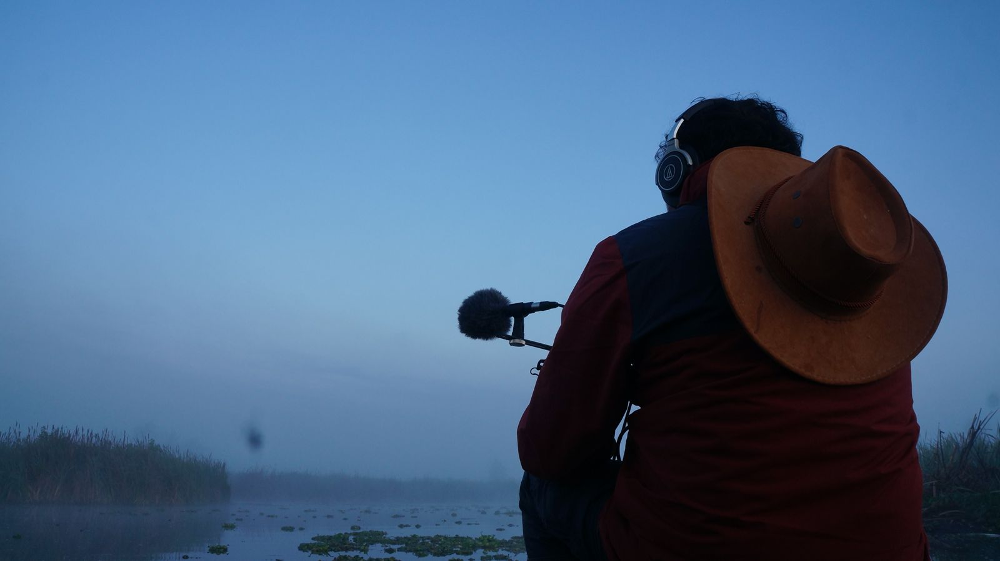

Recorrer y escuchar
La caminata y la escucha situada abren un acercamiento al territorio desde la experiencia corporal. El recorrido se convierte en una forma de atender a las relaciones que componen un lugar.
Escucha · Territorio · Investigación
La escucha como punto de partida. Recorridos, registros y preguntas que se construyen desde la práctica artística.
Investigación en curso · UNAM
Una metodología crítica desde las prácticas artísticas sonoras en el Estado de México.
Mi investigación doctoral parte de la práctica artística para estudiar la escucha, el espacio público y el territorio. La escucha performativa y la cartografía crítica sonora articulan el trabajo de campo con la reflexión sobre cómo producimos conocimiento desde las artes.
Doctorado en Artes y Diseño · Facultad de Artes y Diseño, UNAM.

Cuerpo, registro y reflexión
La caminata y la escucha situada abren un acercamiento al territorio desde la experiencia corporal. El recorrido se convierte en una forma de atender a las relaciones que componen un lugar.
Grabaciones de campo, notas y cartografías reúnen huellas de esa experiencia. El registro permite volver sobre lo escuchado y poner en relación situaciones, espacios y temporalidades.
La elaboración artística y la escritura forman parte de la investigación. Son modos de ensayar preguntas sobre lo escuchado y de compartirlas con otras personas.
Un antecedente · 2018
En la Maestría en Estudios Visuales exploré la escucha como apertura, exposición y relación con el otro. Ese trabajo sobre la imagen sonora es un antecedente de las preguntas que continúo desarrollando.
Consultar la tesis